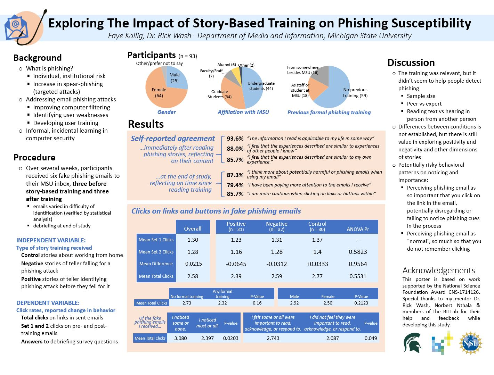
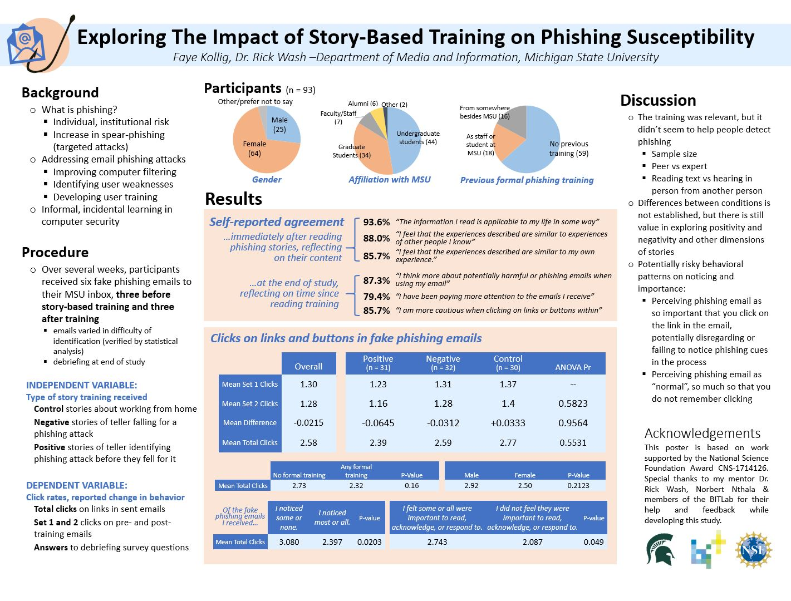

Security Stories
Undergraduate Research Assistant
Designing and implementing an experimental protocol to develop training against phishing emails
 

Project Scope
This project began in 2017 and aimed to explore how communicating security advice through stories could improve people’s security behavior ‘in the wild’. This included developing models of real-life security decision behavior through interview studies and investigating the impact of stories in different cybersecurity contexts, including passwords, two-factor authentication, and for my central involvement, email. I was involved in three parts of this research project: coding security stories told in a survey study, aiding in transcription for a non-expert security decision making interview study, and spent most of my involvement developing and implementing an experimental protocol to test how story-based training affecting click rates on phishing emails. I began working on the experiment in May of 2020 and began running it in November of 2020.
Process
The process of designing and actualizing an experiment took place in four main parts, which
overlapped when problems arose and it became necessary to return to a previous step. First, I engaged in
literature review and learning about phishing emails, training, susceptibility, and experimental protocols.
During this process, I gained a feel for the common problems, ethical concerns, gaps, and standards in the
area of study. I revisited literature during all parts of the study, and I used it as a way to better inform
my approach to problems that arose, along with consulting with my mentor, Dr. Wash.
After the
initial period of learning, I focused on developing a research question, hypothesis, and experiment design
that would be most useful and feasible given our financial, time, and ethical constraints. After initially
coming up with an experiment design, there was a long process going back and forth between design and
development. During this period, I work with Dr. Wash and Norbert (a post-doctoral student working on the
same grant) to address the technology side of running the experiment. I presented my progress at the
Mid Michigan Symposium for Undergraduate Research Experiences.
At the beginning of the fall, I did
several iterations of pilot testing, including running the study myself and doing a soft launch with ten
participants to work out the kinks in the technology before moving on to the actual study launch. During the study,
I monitored the recruitment and data collection process to watch for problems. After data collection concluded,
I used RStudio to analyze participant data from surveys as well as data about emails they clicked on before
and after training. Following this data analysis, I presented my findings at the University Undergraduate Research
and Arts Forum.
Individual Skills and Responsibilities
As an undergraduate research assistant, I:
- Searched for, took notes on, and synthesized ideas from academic papers in the field of email security and phishing training
- Prepared periodic presentations, flow charts, and diagrams on my progress and on key decisions
- Utilized Excel formulas, Qualtrics survey tools, and RStudio to develop the experiment protocol and survey instrument, as well as tidy data and perform analysis
- Coordinated the recruitment and payment of subjects for an online study using the paid SONA software
- Attended and presented at weekly lab meetings to discuss ongoing research